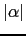
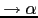

yacc provee
la declaración %union.
La declaración %union especifica la colección de posibles tipos de datos de yylval y de los atributos $1, $2, ...
He aqui un ejemplo:
%union {
double val;
int index;
}
Esto dice que los dos tipos de alternativas son double y int . Se les han dado los nombres val y index.
%token <val> NUMBER %token <index> VAR %type <val> expr %right '=' %left '+' '-' %left '*' '/'
Estos nombres <val> e <index> se utilizan en las declaraciones de %token y %type para definir el tipo del correspondiente atributo asociado.
Dentro de las acciones, se puede especificar el tipo de un símbolo insertando <tipo> despues del $ que referencia al atributo. En el ejemplo anterior podríamos escribir $<val>1 para indicar que manipulamos el atributo
del primer símbolo de la parte derecha de la regla como si fuera un double.
La información que provee la declaración %union es utilizada por yacc
para realizar la sustitución de las referencias textuales/formales
($$, $1, ...$
) a los atributos de
los símbolos que conforman la regla (que pueden verse como parámetros
formales de las acciones) por las referencias a las zonas de memoria
en las que se guardan (que están asociadas con los correspondientes
estados de la pila) cuando tiene lugar la reducción en el algoritmo de
análisis LR:
case "reduce A

" :
execute("reduce A
", top(
-1),
, top(0));
pop(
);
push(goto[top(0)][A];
break;
Asi, yacc es capaz de insertar
el código de ahormado de tipos correcto.
Ello puede hacerse porque se conocen los tipos
asociados con los símbolos en la parte derecha de
una regla, ya que han sido proveídos en
las declaraciones %union, %token y %type.